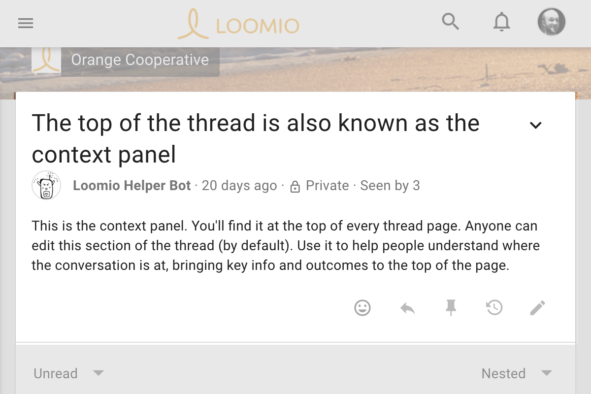
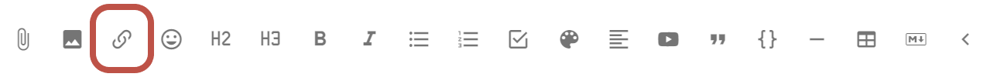
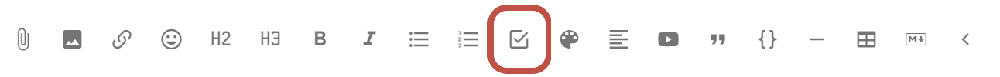
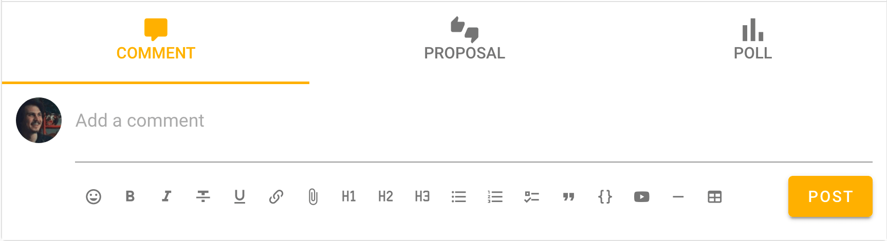

Engaging with threads
Comments and tools such as thread translation and thread emails.
Thread context
The thread context has special status within a thread. It's always at the top, and it's always visible on the page.

Like a comment, you can format your text and attach files or images. Unlike a comment, anyone in the group can update the context (and the title of the thread) by default. This means you can enable anyone to pitch in and help keep things easy to understand and easy to find.
Tip: As the thread grows, update the context with key understandings and information so new people can catch up and participate easily.
The context is like the whiteboard in your meeting room, where you can write the agenda, the hopeful outcomes and how you aim to get there, and take group notes. Learn more about preparing threads and groups for success in our Facilitator's Guide.
Add attachments
Use the paper clip icon, just below the text form, to add attachments from your computer.

Remove attachments
While editing the context, click the X to the right of the attachment's name.

Formatting
Use the formatting tools underneath the space in which you write (any form). Hover the mouse/cursor over each item to know what it is. There's a number of format options listed below, and a few are explained in more detail further down.
- stylize (bold, italics, code block…)
- create lists (eg, checklists)
- turn text into hyperlinks - links icon
- add attachments (from your device) - paper clip icon
- embed video - play button icon
- create and modify tables - icon with four squares.
Link to a Google doc
You can add a link to a Google doc in Loomio anywhere there is a text space; when starting a thread or poll, writing a comment, or updating your group description. The link icon is one of the formatting tools under the space you can write text in Loomio.
To use the link feature,
- Select the text you want to link to - say the name of a document
- Click the link icon
- Find the document link - go to your Google drive and ‘Get link’, or go to the Google doc and ‘Share link’. Check the link permissions so members can open the link - usually ‘Anyone with the link’. Copy the link to your clipboard.
- Now, go back to Loomio and paste the link.
A preview of the doc will appear under the text space. You can remove this if you want.
Now, anyone with access to your Loomio thread and permission to view the doc can open and read it.

Embed videos
You can embed a video from popular video platforms like Youtube and Vimeo into Loomio anywhere there is a text space; when starting a thread or poll, writing a comment, or updating your group description. The embed video icon is one of the formatting tools, under the space where you write text in Loomio.
To use the embed video feature,
- Click the embed video icon
- Go to the video you want to embed, find and copy the shareable link
- Now, go back to Loomio and paste the link
A preview of the video will appear.
Now, anyone with access to your Loomio thread and permission to view the video can play it from within Loomio.

Tip: Make sure you set the visibility of the video in Youtube or Vimeo so that the people you want to can view it. In Youtube 'Unlisted' is a good option if you do not want to make the video public.
Markdown
To revert to markdown editing, click M↓. If you click this while there is text in the form, some formatting may be lost upon conversion.
WYSIWYG
Click WYSIWYG to return to the formatting tools. This will convert any text and markdown formatting to display how it will appear when posted. PREVIEW also shows you how your text will appear, but without converting.
Checklist
From the lists dropdown, choose Checklist.

Click on the checklist/ tick boxes in order to cross out that to-do from the edit form of any context or thread you have permission to edit. I.e., you cannot tick boxes in someone elses comment.
Comments and replies
The most common activity in a thread is commenting. Comments are shared with everyone in the thread – usually this is just the members of your group. First look for Comment and your user photo (or initials).
 Make sure that Comment is highlighted, not Proposal or Poll.
Write your comment and press Post to have your say.
Replies are like comments except in that the author of the original comment will be notified of your reply. Click reply on the comment you would like to associate your comment with, as it will be nested underneath theirs – by default – in the thread in which you replied.
You can reply to your own comment in order to nest your reply underneath the comment. Click the three horizontal dots (⋯) to find reply in this case.
If Loomio has emailed you a comment and says you can reply to the email, you can reply directly from your email and your message will appear in the thread.
Editing comments
If you've made a typo, or want to add a bit more information to your comment shortly after you've posted it, click edit on your comment. Editing does not take anyone else's attention with notifications nor unread signals.

Changes you've made will be visible to others via the edited button, so you can see what people have changed in their comment.


If you have new information or are coming back after an extended period of time, just make a new comment, then people who have already read your comment will see that there is new information.
Reactions
 Click react on any thread context or comment to share how a comment made you feel, or acknowledge something someone has said, without writing a comment. They're a light-weight way to participate without interrupting the conversation, and they only send a notification within the app (not by email).
Click react on any thread context or comment to share how a comment made you feel, or acknowledge something someone has said, without writing a comment. They're a light-weight way to participate without interrupting the conversation, and they only send a notification within the app (not by email).
Automatic translation
Loomio can translate user content (eg, votes, comments…) from one language into another automatically (with the help of Google Translate). If the author of a comment uses a language other than yours, Translate comment will be available in the drop-down options of the comment in question, from the three horizontal dots (⋯).
Facilitation and Decision tools
 There are a selection of facilitation tools and decision tools available to you from within the thread.
There are a selection of facilitation tools and decision tools available to you from within the thread.
- Proposals are there to help you see if there is agreement about a statement or course of action, and surface the disagreement if that's what needs to happen. Often, you can use proposals to bring the discussion to conclusion.
- Polls are useful to understand preferences of the group.
- Use a time poll if you need to get everyone together, and want to find the best time for that meeting to happen.
Find out more about decision tools.
Email notifications
By default
- you will receive an email with everything you missed the day before as a daily digest
- you will receive immediately emails for all activity in threads in which you have participated
To change these defaults and more… → Notifications
Setting email notifications for individual threads
You can adjust your email settings per thread, so that you can mute conversations that will never matter to you and get all activity immediately for those critical to you (and everything in between).
To do this, use the subscribe button at the bottom of the thread's context. If you want to see this or learn more about email settings… → Thread email settings & Subscribe